One Øre
Christian IX (1874-1904)
Frederik VIII (1907-1912)
Christian X (1913-1923)
Christian X (1926-1940)
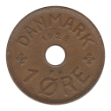 1928-❤ N·GJ
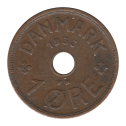 1933-❤ N·GJ
Christian X (1941-1946)
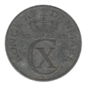 1942-❤ N·S
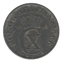 1943-❤ N·S
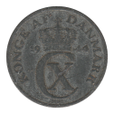 1944-❤ N·S
Frederik IX (1948-1972)
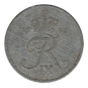 1952-❤ N·S
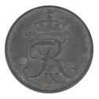 1953-❤ N·S
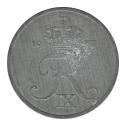 1957-❤ C·S
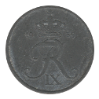 1959-❤ C·S
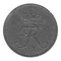 1961-❤ C·S
1963-❤ C·S
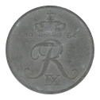 1964-❤ C·S
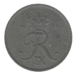 1965-❤ C·S
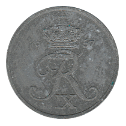 1967-❤ C·S
1971-❤ C·S
Back to Denmark
Back to Home